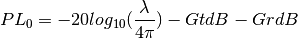

pylayers.antprop.loss.PL0¶
- pylayers.antprop.loss.PL0(fGHz, GtdB=0, GrdB=0)[source]¶
Path Loss at frequency fGHZ @ 1m
Parameters: fGHz: float :
frequency GHz
GtdB: float :
transmitting antenna gain dB (default 0 dB)
GrdB: float :
receiving antenna gain dB (default 0 dB)
Returns: PL0 : float
path @ 1m
Notes

Examples
>>> fGHz = 2.4 >>> PL = PL0(fGHz) >>> assert (PL<41)&(PL>40),"something wrong"